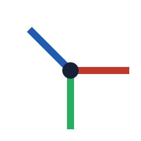

Spaces between ideas
An impress.js presentation written to test the XCursus importer.
Introduce the idea of a canvas larger than the screen.
Beside
Steps are placed in a plane, left to right.
Larger
A scale of two makes this step twice as large; the camera moves back.
- Position
- Rotation
- Scale
Depth
Rotations about three axes, applied in the order z, y, x.


Overview